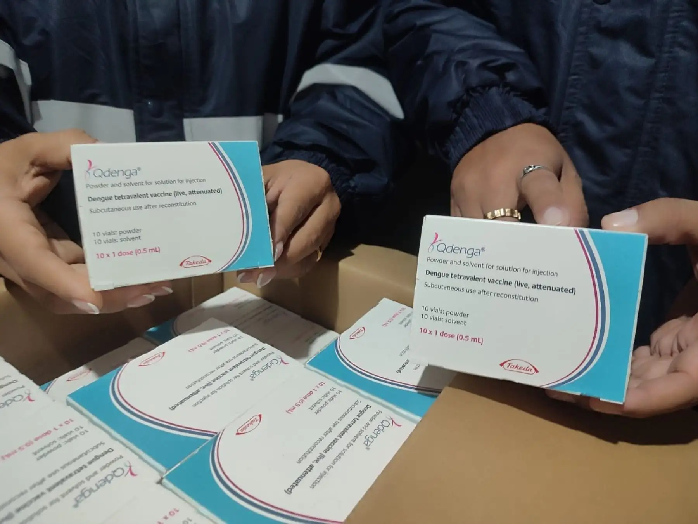
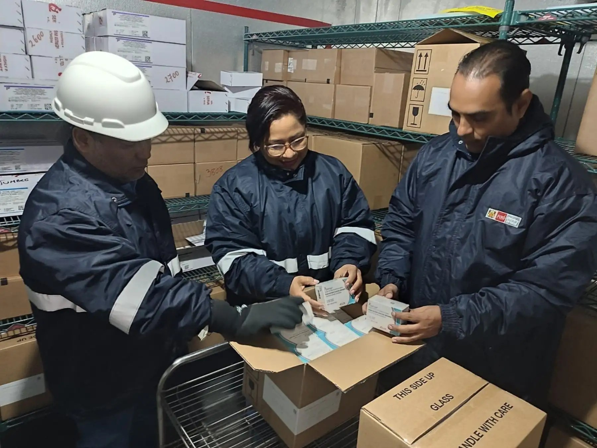

Un brote que no da tregua
El asentamiento humano Vía Central, ubicado en la jurisdicción del puesto de salud Nicolás Garatea, en el distrito de Nuevo Chimbote, se ha convertido en el epicentro de un nuevo foco de dengue en la región Áncash. La Red de Salud Pacífico Sur informó que el sector registra ya cuatro casos confirmados de la enfermedad, luego de que se identificaran dos nuevos pacientes en las últimas horas.
La confirmación de estos casos encendió las alarmas sanitarias, no solo por el incremento en el número de contagios, sino por las serias dificultades que enfrentan las brigadas para realizar el control vectorial. Durante la jornada de cerco entomológico desplegada en el ámbito del puesto de salud Nicolás Garatea, los inspectores lograron intervenir 150 viviendas, lo que representa apenas el 50 % de las casas programadas.
La labor de los inspectores permitió detectar 14 inmuebles con presencia de larvas del zancudo Aedes aegypti, el principal transmisor del dengue. Este hallazgo evidencia que el vector sigue reproduciéndose activamente en la zona, lo que incrementa el riesgo de nuevos contagios si no se toman medidas inmediatas.
Dato clave: De las 150 viviendas inspeccionadas, 14 presentaron larvas del zancudo transmisor. Además, 103 casas estaban deshabitadas, 44 permanecían cerradas y en tres hogares se negó el ingreso al personal de salud.
Las barreras que frenan el control del dengue
El informe oficial revela un panorama complejo para las autoridades sanitarias. Durante la intervención en Vía Central, no fue posible inspeccionar 103 viviendas porque se encontraban deshabitadas, 44 permanecían cerradas y en tres hogares los propietarios se negaron a permitir el ingreso del personal de salud.
Esta resistencia no es un fenómeno aislado. Días antes, cuando se reportó el segundo caso confirmado en el mismo sector, la cobertura del control larvario alcanzó apenas el 14 %. En aquella oportunidad, las brigadas solo pudieron intervenir 39 viviendas en un radio de 150 metros alrededor de la casa del paciente confirmado. La situación se repitió: 178 viviendas deshabitadas, 53 cerradas y tres con negativa de acceso.
La baja cobertura de las inspecciones domiciliarias se ha convertido en el principal obstáculo para contener la propagación del dengue en Nuevo Chimbote. Sin acceso a las viviendas, los inspectores no pueden identificar ni eliminar los criaderos del zancudo, lo que permite que el vector continúe reproduciéndose y poniendo en riesgo a toda la comunidad.

Los inspectores buscan larvas del Aedes aegypti en recipientes donde las familias almacenan agua. La colaboración vecinal es fundamental para eliminar los criaderos. Foto: RSD Noticias.
Acciones de prevención y educación comunitaria
A pesar de las dificultades, la Red de Salud Pacífico Sur ha intensificado las acciones de prevención en Vía Central. Como parte de la estrategia, la responsable de Promoción de la Salud de la entidad, Helen Abanto Crespo, brindó una sesión educativa a los vecinos sobre las medidas de prevención de la enfermedad.
Además, se conformó un comité de vigilancia con integrantes de la junta directiva de Vía Central. Este comité tiene como objetivo facilitar el ingreso de los inspectores sanitarios a las viviendas, actuando como un puente entre las brigadas de salud y los residentes. La participación comunitaria se vuelve esencial en un contexto donde la desconfianza o la ausencia de los propietarios impiden el trabajo preventivo.
La Red de Salud Pacífico Sur exhortó a las familias a colaborar con las brigadas y permitir la inspección de los recipientes donde almacenan agua. Esta práctica es clave para identificar y eliminar posibles criaderos del zancudo transmisor. El llamado es urgente: sin la participación activa de la población, las acciones sanitarias difícilmente podrán contener el avance del dengue.
El dengue en el contexto regional
La situación en Nuevo Chimbote no es un hecho aislado. La región Áncash ha registrado un incremento sostenido de casos de dengue durante el 2026. Según reportes de la Red de Salud Pacífico Sur, hasta agosto se habían confirmado 145 casos en seis distritos costeros: Casma, Nuevo Chimbote, Huarmey, Yaután, Moro y Quillo. Casma concentra la mayor cantidad de contagios con 102 casos, seguido de Nuevo Chimbote con 25 y Huarmey con siete.
Un dato que preocupa a las autoridades es la identificación del serotipo 3 del dengue en Casma. Este serotipo puede aumentar el riesgo de desarrollar formas graves de la enfermedad, especialmente en personas que ya tuvieron dengue anteriormente. Aunque hasta el momento no se han registrado fallecidos en la región, el 34 % de los casos ha requerido hospitalización por manifestaciones como vómitos persistentes, dolor abdominal y sangrado.
El director de la Red de Salud Pacífico Sur, Miguel Namihas Gonzáles, ha señalado que el control del mosquito Aedes aegypti enfrenta serias dificultades debido a la limitada cobertura de las inspecciones domiciliarias. De las 376 766 viviendas visitadas para acciones de vigilancia y control vectorial, solo 184 325 fueron inspeccionadas, mientras que 85 732 permanecieron cerradas, 34 702 fueron reportadas como renuentes y 72 000 como deshabitadas.
Contexto nacional: A nivel nacional, el Ministerio de Salud ha reportado más de 34 000 casos de dengue en lo que va del 2026, con 44 fallecidos. La enfermedad transmitida por el Aedes aegypti sigue siendo un desafío sanitario prioritario en las regiones costeras del Perú.
Síntomas y signos de alarma
El dengue es una enfermedad viral transmitida por la picadura del mosquito Aedes aegypti. Los síntomas más frecuentes incluyen fiebre alta, dolor de cabeza, dolor muscular y articular, así como dolor detrás de los ojos. También pueden presentarse erupciones en la piel y malestar general.
Los signos de alarma que requieren atención médica inmediata son dolor abdominal intenso y persistente, vómitos continuos, sangrado, somnolencia, irritabilidad y decaimiento general. Ante la presencia de cualquiera de estos síntomas, se debe acudir de inmediato al centro de salud más cercano y evitar la automedicación.

Sesiones educativas y la conformación de comités de vigilancia buscan mejorar la colaboración vecinal en las labores de prevención. Foto: RSD Noticias.
¿Cómo prevenir el dengue en casa?
La medida más efectiva para prevenir el dengue es eliminar los criaderos del mosquito Aedes aegypti. Esto implica evitar el agua estancada en recipientes como baldes, tanques, floreros, llantas y cualquier objeto que pueda acumular agua. La limpieza y la "descacharrización" (eliminación de objetos inservibles) son fundamentales.
Se recomienda lavar, escobillar y tapar los recipientes donde se almacena agua. Además, es importante usar repelente, vestir ropa ligera de manga larga y colocar mosquiteros en puertas y ventanas. Estas medidas, combinadas con la colaboración con las brigadas sanitarias, pueden marcar la diferencia en la lucha contra el dengue.
La experiencia en Nuevo Chimbote demuestra que el dengue no se combate solo con acciones institucionales. La participación activa de la comunidad, la confianza en el personal de salud y la adopción de prácticas preventivas en el hogar son pilares indispensables para proteger la salud de todos.